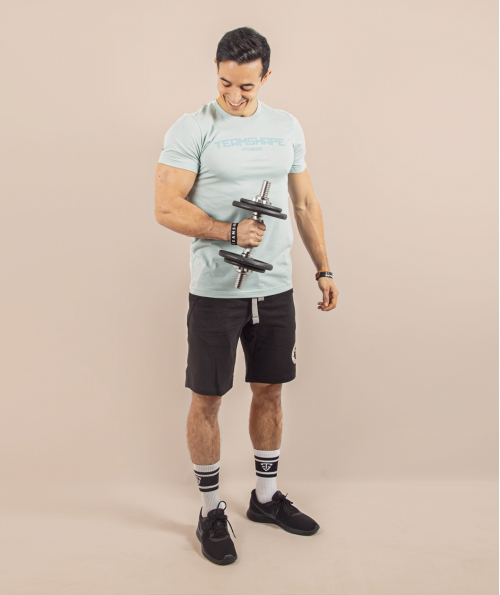
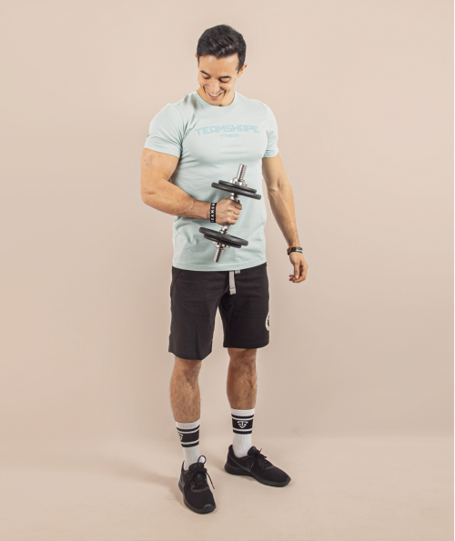

Ein paar Information Bilder und video über Inshape
 


Tibo Inshape ist Influencer und youtuber, wohnt in Frankreich und er macht Videos über Sport, Fitness und Training
As a student at Toulouse Business School, Thibaud Delapart started publishing bodybuilding videos on the YouTube platform under the pseudonym Tibo InShape during his final year of study. His audience exploded when he added humor to his bodybuilding and nutrition advice. He has built his renown thanks to social media and quickly got millions of subscribers, turning him into a sports star. His colloquial expressions such as "Daaamn!" at the beginning of his videos or "énorme et sec" (which means, huge and ripped) have become familiar YouTube-related expressions. In 2015, his success on the internet allowed him to launch an online clothing brand. He made most of his early videos in his room with a friend, but his fame now enables him to film in different places and to organize meetings with several personalities such as Christophe Lemaitre, Maïva Hamadouche or Esteban Ocon. In December 2017, the program Quotidien named him "Youtuber of the year 2017". His videos were then receiving an average of a million views each.